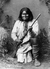

Apaçiler’in savaş şefi Geronimo (1829–1909), Kuzey Amerika’nın güneybatısında Amerikan yayılmasına karşı gösterilen direnişin son halkalarından biriydi. 1886 yılında ABD ordusu tarafından yakalanıp hapsedilmesinden önce batıda bir efsane haline gelmişti. Apaçilerin geleneksel topraklarını koruyabilmek için sık sık acımasızlaşan bir direniş göstermişti.

Geronimo’nun yakalanması ile birlikte günümüz New Mexico ve Arizonası’ndaki geniş kapsamlı ve örgütlü yerli muhalefeti son bulmuş oldu. Geronimo hayatının kalan kısmını bir savaş esiri olarak geçirdi ve esaret altında öldü.
Geronimo, bugün Güney Arizona olarak bilinen bölgede doğmuştu. Bölge, Geronimo’nun gençliğinde halen Apaçilerin kontrolünde olsa da hem Meksika hem de ABD’nin baskısı gitgide daha çok hissedilir olmuştu. Geronimo on yedi yaşında evlendi ve 1850’lerin başında Meksikalılar’a karşı savaştı. Genç karısı Meksikalı askerler tarafından öldürülünce işgalcilere karşı olan düşmanlığını daha da arttı.
At üzerinde çok hızlı hareket etmesi ve kendisini yakalamak için düzenlenen askeri operasyonlardan bir şekilde kurtulmayı başarması ile ün kazanmıştı. Geronimo yaklaşık otuz yıl boyunca aralıksız bir şekilde savaştı. Apaçi şefi Cochise (1815–1874) ölünce Geronimo kabilenin en önde gelen savaşçısı konumuna gelmişti.
1875 ve 1885 yıllarında ordu neredeyse Geronimo’yu yakalıyordu. Her iki olayda da ellerinden kılpayı kurtulmayı son anda başarmıştı. Ancak gücü gitgide zayıflıyordu. En sonunda yanında sadece dört yüz erkek, kadın ve çocuk kalmıştı.
Hapisteyken Geronimo batı direnişinin yaşayan sembolü haline geldi. 1904’teki Dünya Fuarı’na katıldı ve hatta Theodore Roosevelt (1858–1919) için yapılan göreve başlama töreninde yürüyüş bile yaptı. Seksen yaşındayken bile federal hükümet ondan öylesine korkuyordu ki memleketine dönme isteğini reddettiler. 1909 yılında Oklahoma’daki Fort Sill’de öldü.
Ek Bilgiler
1- Geronimo adı Meksikalılar tarafından bulunmuş ve büyük ölçüde yaygınlaşmıştır. Şefin yerli Apaçi dilindeki asıl adı “Goyathlay” idi. “Esneyen adam” anlamına geliyordu.
2- II. Dünya Savaşı sırasında Amerikan Hava Kuvvetleri’ne bağlı askerler bir uçaktan paraşütle atlarken Geronimo diye bağırırlardı. Bu geleneğin Geronimo ile ilgili bir kovboy filmi izleyen bir grup paraşütçü tarafından başlatıldığı sanılmaktadır. Ertesi gün paraşütle atlarken üzerlerindeki gerginliği atmak için böyle bağırmışlardı.
3- 1886 yılında Geronimo’yu yakalayan ABD ordusundaki yüzbaşı H. W. Lawton (1843–1899), ABD-Filipinler savaşı sırasında hayatını kaybetti.